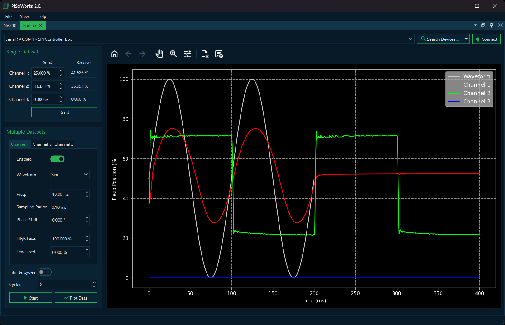
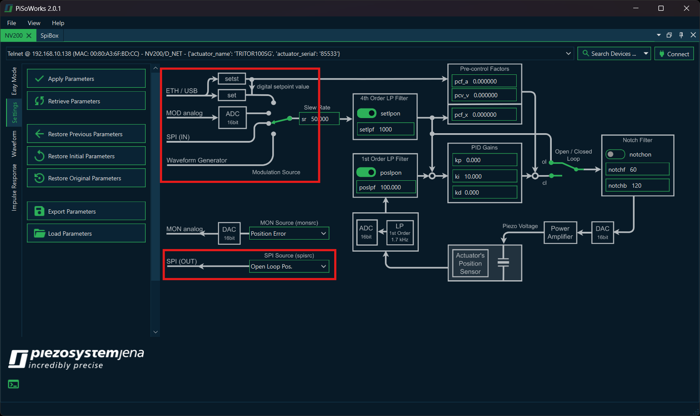

7. SPI Controller Box
The SPI Controller Box allows you to control multiple NV200 amplifiers simultaneously through a centralized interface. PiSoWorks provides full support for operating the SPI Controller Box, enabling you to send individual position commands, generate complex waveforms across multiple channels, and monitor real-time feedback from your actuators.
7.1. Connecting the SPI Controller Box
To use the SPI Controller Box with PiSoWorks:
Connect the SPI Controller Box to your computer via Ethernet or USB
Launch the PiSoWorks application
Add an SPI Box View from the menu (View → Add SPI Box View…)
Establish a connection to the device
7.2. NV200 Configuration
Before sending data from the SPI Controller Box to the amplifiers, each NV200 must be configured to accept SPI input and provide the desired output. To start, connect the NV200s to your computer and add an NV200 View (View → Add NV200 View…). Connect to the selected NV200 and switch to the Settings tab.
Two parameters must be configured for proper operation with the SPI Controller Box:
Modulation Source: To enable setpoint control via SPI, set the modulation source to SPI (IN).
SPI Output: Select the desired data source from the SPI (OUT) dropdown menu.
Additional parameters such as slew rate, PID settings, and filters may also be adjusted as needed.
7.3. Single Position Data
After configuring the NV200 amplifiers, you can send both single position commands and waveform data to the NV200 units. Use the Single Dataset box to send position values simultaneously to each individual channel.
7.3.1. Position Values
Position values are specified as percentages from 0 to 100, where:
0% represents the minimum possible voltage or position (depending on whether the system is in open- or closed-loop mode)
100% represents the maximum possible voltage or position for the connected actuator
7.3.2. Examples
- Closed-loop operation:
If an actuator with a travel range of 200 µm is operated in closed loop and you want to move it to 50 µm, you must enter 25% as the position value.
- Open-loop operation:
If an actuator is driven in open loop with a voltage range of –20 V to 130 V, and you want to output 30 V, the corresponding position value is 33.33%.
7.3.3. Sending Position Data
To apply the selected position values:
Enter the desired position percentages for each channel in the Single Dataset box
Click the Send button to transmit the data
The returned SPI data (e.g., actuator position, setpoint values, etc.) is displayed in the Receive column
7.4. Waveform Generation
To configure waveform output for each channel, use the Multiple Datasets box. This allows you to generate and play back various types of waveforms on the connected channels.
7.4.1. Configuring Waveforms
Select the waveform parameters for a channel by switching between the corresponding tabs
Configure the waveform settings (type, frequency, amplitude, etc.)
Click Start to upload and begin playback of the waveform data
To retrieve the stored SPI responses for each waveform data point, click the Plot Data button
The recorded response will then be plotted in the embedded graph
7.4.2. Custom Waveform Files
You can also provide a custom waveform in the form of a CSV or Excel file for playback.
File Format Requirements:
The file must contain a single column
Each row represents one data point
Each data entry specifies a position value expressed as a percentage from 0 to 100
Tip
Custom waveform files allow you to create complex position sequences that would be difficult to generate using the built-in waveform types. This is particularly useful for specialized testing or calibration procedures.
7.4.3. Viewing Recorded Data
After running a waveform, the SPI Controller Box records the response data from the NV200 amplifiers. This data can be visualized using the embedded plotting functionality:
Click Plot Data to display the recorded responses
The graph shows the relationship between the sent waveform and the measured response
This is useful for verifying system performance and analyzing actuator behavior